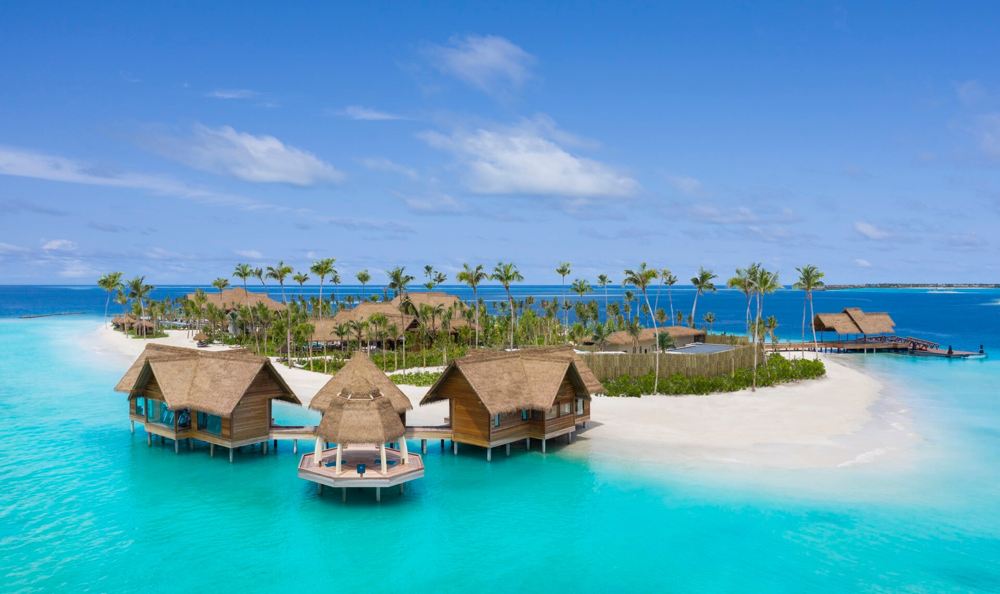

Maldives:My Favourite place
The Maldives archipelago is located on the Chagos-Laccadive Ridge, a vast submarine mountain range in the Indian Ocean; this also forms a terrestrial ecoregion, together with the Chagos Archipelago and Lakshadweep.[13] With an average ground-level elevation of 1.5 metres (4 ft 11 in) above sea level,[14] it is the world's lowest-lying country, with even its highest natural point being one of the lowest in the world, at 5.1 metres (17 ft).[14]
In the 12th century Islam reached the Maldivian archipelago, which was consolidated as a sultanate, developing strong commercial and cultural ties with Asia and Africa. From the mid-16th-century the region came under the increasing influence of European colonial powers, with the Maldives becoming a British protectorate in 1887. Independence from the United Kingdom came in 1965, and a presidential republic was established in 1968 with an elected People's Majlis. The ensuing decades have seen political instability, efforts at democratic reform,[15] and environmental challenges posed by climate change.[16]
Thailand:My Favourite place
In the 12th century Islam reached the Maldivian archipelago, which was consolidated as a sultanate, developing strong commercial and cultural ties with Asia and Africa. From the mid-16th-century the region came under the increasing influence of European colonial powers, with the Maldives becoming a British protectorate in 1887. Independence from the United Kingdom came in 1965, and a presidential republic was established in 1968 with an elected People's Majlis. The ensuing decades have seen political instability, efforts at democratic reform,[15] and environmental challenges posed by climate change.[16]